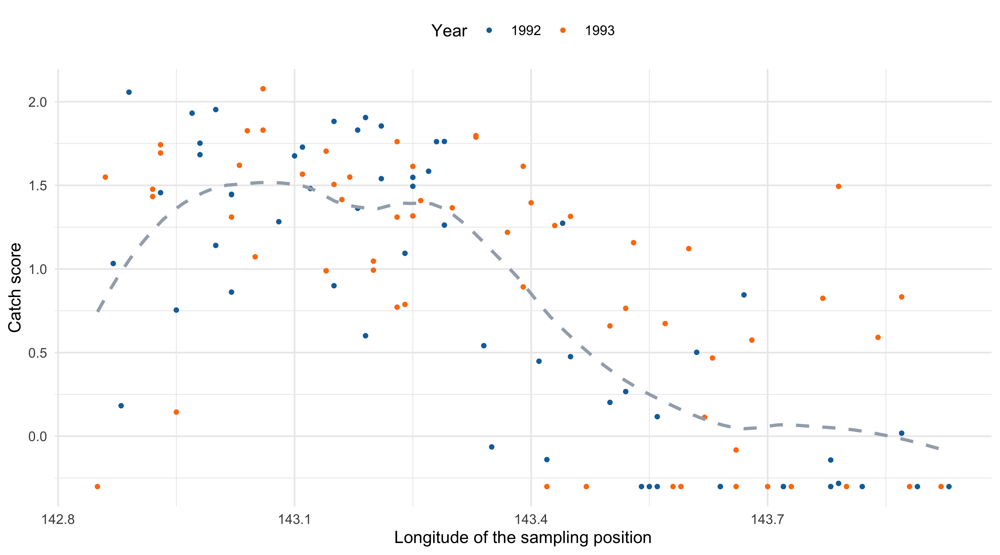
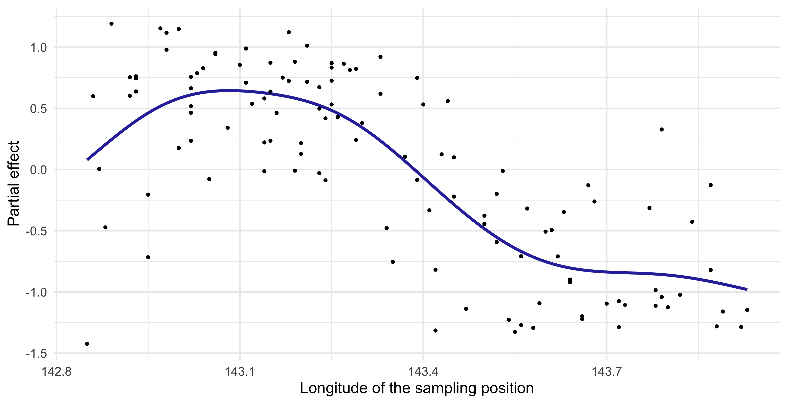
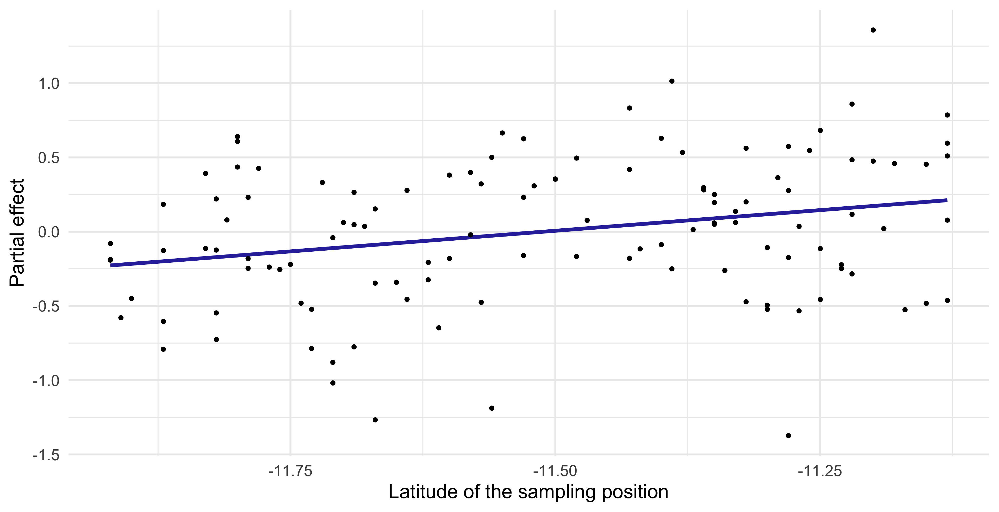
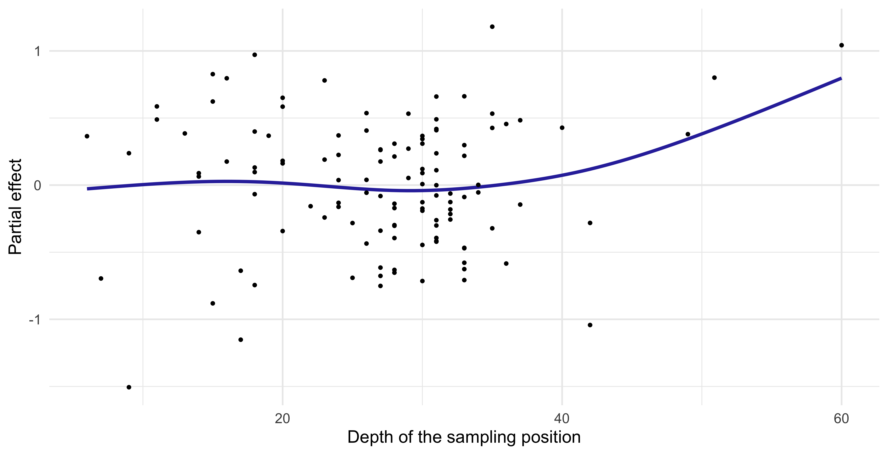

| Null model | Linear model | GAM | |
|---|---|---|---|
| MAE | 0.611 | 0.361 | 0.315 |
| RMSE | 0.718 | 0.463 | 0.408 |
Additive models
Data Mining - CdL CLAMSES
Tommaso Rigon
Università degli Studi di Milano-Bicocca
Homepage
In this unit we will cover the following topics:
- Generalized additive models (GAMs)
We have seen that fully nonparametric methods are plagued by the curse of dimensionality.
GAMs are semi-parametric approaches that keep the model complexity under control so that:
- they are more flexible than linear models;
- they are not hugely impacted by the curse of dimensionality.
The running example is about trawl data from the Great Barrier Reef.
An ecological application
The trawl dataset
We consider the
trawldataset, which refers to a survey of the fauna on the sea bed lying between the coast of northern Queensland and the Great Barrier Reef.The response variable is
Score, which is a standardized numeric quantity measuring the amount of fishes caught on a given location.We want to predict the catch score, as a function of a few covariates:
- the
LatitudeandLongitudeof the sampling position. The longitude can be seen as a proxy of the distance from the coast in this specific experiment; - the
Depthof the sea on the sampling position; - the
Zoneof the sampling region, either open or closed to commercial fishing; - the
Yearof the sampling, which can be either1992or1993.
- the
Having remove a few observations due to missingness, we split the data into training (119 obs.) and test set (30 obs.). The full
trawldataset is available in thesmR package.
The trawl dataset
Getting started: linear models
Let us begin our analysis by trying to predict the
Scoreusing a linear model of the form y_i = \beta_0 + \beta_1 x_{i1} + \cdots + \beta_px_{ip}, \qquad i=1,\dots,n,The above values correspond to the variables of the
trawldataset, so that \begin{aligned} \texttt{Score}_i = \beta_0 &+ \beta_1 \texttt{Latitude}_i + \beta_2 \texttt{Longitude}_i + \\ &+ \beta_3\texttt{Depth}_i + \beta_4 I(\texttt{Zone}_i = \texttt{Closed}) + \beta_5 I(\texttt{Year}_i = \texttt{1993}). \end{aligned}Such a model can be estimated using ordinary least squares, resulting in:
| term | estimate | std.error | statistic | p.value |
|---|---|---|---|---|
(Intercept) |
297.690 | 26.821 | 11.099 | 0.000 |
Latitude |
0.256 | 0.222 | 1.151 | 0.252 |
Longitude |
-2.054 | 0.187 | -10.955 | 0.000 |
Depth |
0.020 | 0.007 | 3.003 | 0.003 |
Zone_Closed |
-0.116 | 0.102 | -1.143 | 0.255 |
Year_1993 |
0.127 | 0.103 | 1.242 | 0.217 |
Scatterplot with loess estimate

Generalized additive models (GAM)
The ANOVA decomposition of a function
- We seek for an estimate of (a suitable transformation of) the mean function, namely g^{-1}\{\mathbb{E}(Y_i)\} = f(x_{i1},\dots,x_{ip}), where g^{-1}(\cdot) is the so-called link function.
- The unknown multivariate function f(\bm{x}) = f(x_1,\dots,x_p) : \mathbb{R}^p \rightarrow \mathbb{R} is too complex. However, the following decomposition holds f(\bm{x}) = \beta_0 + \underbrace{\sum_{j=1}^p f_j(x_j)}_{\text{Main effect}} + \underbrace{\sum_{j=1}^p\sum_{k < j}f_{jk}(x_j, x_k)}_{\text{Interaction effect}} + \underbrace{\sum_{j=1}^p\sum_{k < j}\sum_{h < k < j}f_{jkh}(x_j, x_k, x_h)}_{\text{Higher order interaction}} + \cdots.
By imposing suitable constraints, this decomposition can be made unique.
More importantly, this decomposition gives us an intuition on how to build non-linear models with a simplified structure.
Generalized additive models (GAM)
- A generalized additive model (GAM) presumes a representation of the following type: f(\bm{x}_i) = \beta_0 + f_1(x_{i1}) + \cdots + f_p(x_{ip}) = \beta_0 + \sum_{j=1}^pf_j(x_{ij}), \qquad i=1,\dots,n, where f_1,\dots,f_p are smooth univariate functions with a potentially non-linear behavior.
In GAMs we include only the main effects and we exclude the interactions terms.
Generalized linear models (GLMs) are a special case of GAMs, in which f_j(x_{ij}) = \beta_j x_{ij}.
- To avoid what is essentially a problem of model identifiability, it is necessary for the various f_j to be centered around 0, that is \sum_{i=1}^n f_j(x_{ij}) = 0, \qquad j=1,\dots,p.
The backfitting algorithm I
- There exist several strategies for estimating the unknown functions f_1,\dots,f_p. One of them, called backfitting, is particularly appealing because of its elegance and generality.
Suppose we model each f_j(x) = \sum_{m = 1}^{M_j}\beta_{mj} h_{mj}(x) with a basis expansion, for example using regression splines.
In a regression problem we need to minimize, over the unknown \beta parameters, the loss \sum_{i=1}^n\left\{y_i - \beta_0 - \sum_{j=1}^pf_j(x_{ij})\right\}^2 subject to the constraint \sum_{i=1}^n f_j(x_{ij}) = 0.
When f_j are regression splines, the above loss can be minimized using least squares. The identifiability issue could be handled by removing the intercept term from each spline basis.
However, here we consider an alternative and iterative minimization method, which is similar to the coordinate descent algorithm we employed for the elastic-net.
The backfitting algorithm II
- Now, let us re-arrange the term in the squared loss as follows: \sum_{i=1}^n\left\{\textcolor{red}{y_i - \beta_0 - \sum_{k\neq j}f_k(x_{ik})} - f_j(x_{ij})\right\}^2, where the highlighted terms are sometimes called partial residuals.
- Hence, we can repeatedly and iteratively fit a univariate smoothing model for f_j using the partial residuals as response, keeping fixed the value of the other functions f_k, for k \neq j.
- This algorithm produces the same fit of least squares when f_j are regression splines, but the idea is appealing because it can be used with any generic smoothers \mathcal{S}_j.
- Finally, note that under the constraint \sum_{i=1}^n f_j(x_{ij}) = 0 the least square estimate for the intercept term is \hat{\beta}_0 = \bar{y}, i.e. the arithmetic mean.
The backfitting algorithm (regression)
The backfitting algorithm for additive regression models
Initialize \hat{\beta}_0 = \bar{y} and set f_j(x_j) = 0, for j=1,\dots,p.
Cycle j =1,\dots,p, j =1,\dots,p, \dots, until convergence:
Update the kth function by smoothing via \mathcal{S}_j the partial residuals, so that \hat{f}_j(x) \leftarrow \mathcal{S}_j\left[\left\{x_{ij}, y_i - \hat{\beta}_0 - \sum_{k \neq j} \hat{f}_k(x_{ik})\right\}_{i=1}^n\right].
Center the function by subtracting its mean \hat{f}_j(x) \leftarrow \hat{f}_j(x) - \frac{1}{n}\sum_{i=1}^n\hat{f}_j(x_{ij}).
Backfitting: comments and considerations
The backfitting algorithm, when f_j are modeled as regression splines, is known as “Gauss-Seidel”. The convergence is guaranteed under standard conditions.
Interestingly, even when \mathcal{S}_j are smoothing splines the convergence of backfitting is guaranteed; the proof for this statement is less straightforward.
- In general, however, there is no theoretical guarantee that the algorithm will ever converge, even though the practical experience suggest that this is not a big concern.
- When \mathcal{S}_j is a linear smoother with smoothing matrix \bm{S}_j, then by analogy with the previous unit we can define the effective degrees of freedom of \hat{f}_j as \text{df}_j = \text{tr}(\bm{S}_j). The number of degrees of the whole model therefore is \text{df} = 1 + \sum_{j=1}^p \text{df}_j.
- A variant of backfitting for classification problems is available. Once again, relying on quadratic approximations of the log-likelihood allows for a generalization to GLMs.
The backfitting algorithm (classification)
Local scoring algorithm for additive logistic regression
Initialize \hat{\beta}_0 = \text{logit}(\bar{y}) and set f_j(x_j) = 0, for j=1,\dots,p.
Iterate until convergence:
Define the quantities \hat{\eta}_i = \hat{\beta}_0 + \sum_{j=1}^p\hat{f}_j(x_{ij}) and \hat{\pi}_i = \{1 + \exp(-\hat{\eta}_i)\}^{-1}.
Construct the working response z_i = \hat{\eta}_i + \frac{y_i - \hat{\pi}_i}{\hat{\pi}_i(1 - \hat{\pi}_i)}, \qquad i=1,\dots,n.
Construct the weights w_i = \hat{\pi}_i(1 - \hat{\pi}_i), for i=1,\dots,n.
Use a weighted backfitting algorithm using the z_i as responses, which produces a new set of estimates \hat{f}_1,\dots,\hat{f}_p.
GAM using penalized splines
- A common special instance of GAM occurs when smoothing splines are employed. In the regression case, the backfitting algorithm implicitly minimizes the following penalized loss \mathscr{L}(f_1,\dots,f_p; \lambda) = \sum_{i=1}^n\left\{y_i - \beta_0 - \sum_{j=1}^pf_j(x_j)\right\}^2 + \sum_{j=1}^p\lambda_j \int_{a_j}^{b_j}\{f''_j(t)\}^2\mathrm{d}t, where \lambda = (\lambda_1,\dots,\lambda_p) is a vector of smoothing parameters.
Each f_j(x;\beta) is a natural cubic spline, therefore the penalized least squares criterion is \mathscr{L}(\beta; \lambda) = \sum_{i=1}^n\left\{y_i - \beta_0 - \sum_{j=1}^pf_j(x_j; \beta_j)\right\}^2 + \sum_{j=1}^p\lambda_j \beta_j^T\bm{\Omega}_j\beta_j, whose joint minimization over \beta is available in closed form.
Hence, a direct algorithm that minimizes \mathscr{L}(\beta; \lambda) is used instead of backfitting.
On the choice of smoothing parameters
In GAMs there are p smoothing parameters \lambda_1,\dots,\lambda_p that must be selected. We can proceed in the usual way, e.g. considering the generalized cross-validation criteria: \text{GCV}(\lambda_1,\dots,\lambda_p) = \frac{1}{n}\sum_{i=1}^n \left(\frac{y_i - \hat{y}_i}{1 - \text{df}/n}\right)^2.
An alternative criterion in this context is the REML (Restricted Maximum Likelihood), which is the marginal likelihood of the corresponding Bayesian model.
- It is not possible to construct a grid of values for all the combinations of smoothing parameters \lambda_1,\dots,\lambda_p, because the number of terms increases exponentially in p.
Hence, many software packages numerically optimize the \text{GCV}(\lambda_1,\dots,\lambda_p), or other information criteria, as a function of \lambda_1,\dots,\lambda_p, using e.g. the Newton-Raphson method.
Such an approach is particularly convenient in combination with smoothing splines, because the derivatives needed for Newton’s method are available in closed form.
GAM and variable selection
When p is large there is a need to remove the potentially irrelevant variables. There exist several variable selection ideas for GAMs, but we will not cover the details here.
Option 1. Stepwise regression. Perhaps the simplest method, although it is not as efficient as in linear models because we cannot exploit the same computational tricks.
Option 2. COSSO: Component Selection and Smoothing Operator (Lin and Zhang, 2006). It’s an idea based on combining lasso-type penalties and GAMs.
Option 3. SpAM: Sparse Additive Models (Ravikumar, Liu, Lafferty and Wasserman, 2009). Similar to the above, but it exploits a variation of the non-negative garrote.
Option 4. Double-penalty and shrinkage (Marra and Wood, 2011). It acts on the penalty term of smoothing splines so that high-values of \lambda_1,\dots,\lambda_p leads to constant functions.
Option X. Fancy name. Yet another method for variable selection with GAMs.
GAM modeling of trawl data
Let us get back to the
trawldata. A specification based on GAM could be \begin{aligned} \texttt{Score}_i = \beta_0 &+ f_1(\texttt{Longitude}_i)+ f_2(\texttt{Latitude}_i) + f_3(\texttt{Depth}_i) +\\ &+ \beta_1 I(\texttt{Zone}_i = \texttt{Closed}) + \beta_2 I(\texttt{Year}_i = \texttt{1993}). \end{aligned}In GAMs the predictors are not necessarily modeled using nonparametric methods. Indeed, it is common to have a combination of smooth functions and linear terms.
Besides, it does not make sense to “smooth” a dummy variable.
| term | estimate | std.error | df |
|---|---|---|---|
(Intercept) |
0.849 | 0.088 | 1 |
Zone_Closed |
-0.075 | 0.099 | 1 |
Year_1993 |
0.149 | 0.093 | 1 |
s(Longitude) |
- | - | 4.694 |
s(Latitude) |
- | - | 1 |
s(Depth) |
- | - | 2.447 |
Partial effect of GAMs (Longitude)

Partial effect of GAMs (Latitude)

Partial effect of GAMs (Depth)

Comments and criticism (trawl data)
- The fitted GAM model highlights some interesting aspects of the
trawldata.
In the first place, it seems confirmed that the
Longitudehas a marked non-linear impact on the catch score, as the initial analysis was suggesting.In particular, the catch score is high when the sampling location is close to the coast (but not too close!), and then it suddenly decreases.
The effective degrees of freedom of
Latitudeis \text{df}_2 = 1, meaning that the estimated \hat{f}_2 collapsed to a linear term. The corresponding shrinkage parameter \lambda_2 is very high.Overall, the effect due to the
Latitudelooks small or not present at all.
- The
Depthseems to have a relevant effect on theScore, but this is likely due to a few leverage points at the right extreme of theDepthrange.
- Finally, we note that both
ZoneandYearseem to have a minor effect.
☠️ - Naïve Bayes classifier and GAMs
The naïve Bayes classifier expresses the binary classification probability \text{pr}(y = 1 \mid \bm{x}) as \text{pr}(y = 1 \mid \bm{x}) = \frac{\pi_1 \prod_{j=1}^p p_{j1}(x_j)}{\pi_0\prod_{j=1}^p p_{j0}(x_j) + \pi_1\prod_{j=1}^p p_{j1}(x_j)} = \frac{\pi_1\prod_{j=1}^p p_{j1}(x_j)}{p(\bm{x})}.
Hence, using class 0 as a baseline, we can derive the following expression: \log\frac{\text{pr}(y = 1 \mid \bm{x})}{\text{pr}(y = 0 \mid \bm{x})} = \log\frac{\pi_1\prod_{j=1}^p p_{j1}(x_j)}{\pi_0\prod_{j=1}^p p_{j0}(x_j)} = \log\frac{\pi_1}{\pi_0} + \sum_{j=1}^p\log\frac{p_{j1}(x_j)}{p_{j0}(x_j)} = \beta_0 + \sum_{j=1}^pf_j(x_j).
Therefore, although naïve Bayes and GAMs are fitted in a quite different way, there is a tight connection among the two methods.
Naïve Bayes has a generalized additive model structure. This also suggests that the “additive assumption” is linked to the notion of independence among the covariates.
☠️ - The mgcv R package
GAMs were invented by Hastie and Tibshirani in 1986, including the backfitting algorithm.
Simon Wood (2003) described thin-plate regression splines and their estimation (no backfitting).
Simon Wood (2004, 2011) invented methods for estimating \lambda_1,\dots,\lambda_p in an efficient and stable manner.
Marra and Wood (2011) discussed many methods for practical variable selection for GAMs.
For further details, there is a recent and advanced book by Simon Wood (2017) entitled “Generalized Additive Models: An Introduction with R”.
The
mgcvpackage in R (by Simon Wood) implements everything mentioned here.
Pros and cons of generalized additive models (GAMs)
Pros
GAMs can automatically model non-linear relationships. This can potentially make more accurate predictions for the response.
GAMs, as linear models, are interpretable: the variation of the fitted response, holding all but one predictor fixed, does not depend on the values of the other predictors.
In practice, this means that we can plot the fitted functions \hat{f}_j separately to examine the roles of the predictors in modelling the response.
Additive assumption is quite strong, but it is still possible to manually add interactions as in the linear regression case.
Cons
- Especially when p is large, it is almost impossible to manually model all the interactions among covariates. GAMs do not take second-order effects (or higher) into account.
Results on the test set
- We can now check the predictive performance on the test set, to see which model scored the best in terms of MAE and RMSE.
- It is quite clear that including a non-linear specification for the
Longitudewas indeed a good idea that improved the predictive performance.
References
References I
- Main references
- Chapters 4 and 5 of Azzalini, A. and Scarpa, B. (2011), Data Analysis and Data Mining, Oxford University Press.
- Chapter 9 of Hastie, T., Tibshirani, R. and Friedman, J. (2009), The Elements of Statistical Learning, Second Edition, Springer.
- Historical references
- Hastie, T., and Tibshirani, R. (1986). Generalized Additive Models. Statistical Science 1(3), 209-318.
Specialized references I
- Simon Wood’s contributions
- Wood, S. N. (2003). Thin plate regression splines. Journal of the Royal Statistical Society. Series B: Statistical Methodology 65, 95-114.
- Wood, S. N. (2004). Stable and efficient multiple smoothing parameter estimation for generalized additive models. Journal of the American Statistical Association 99, 673-86.
- Wood, S. N. (2011). Fast stable restricted maximum likelihood and marginal likelihood estimation of semiparametric generalized linear models. Journal of the Royal Statistical Society. Series B: Statistical Methodology 73(1), 3-36.
- Marra, G. and Wood, S. N. (2011). Practical variable selection for generalized additive models. Computational Statistics and Data Analysis 55(7), 2372–87.
- Wood, S. N. (2017). Generalized Additive Models: An Introduction with R. CRC Press.

Comments and criticism of linear models
By simple graphical inspection, it seems that the relationship between
ScoreandLongitudeis non-linear.Also, an interaction effect between
YearandLongitudecould be present.These considerations support the idea that a nonparametric approach might be more appropriate.
However, the number of covariates is p = 5 and therefore a fully nonparametric estimation would not be feasible, because of the curse of dimensionality.
We need a simplified modelling strategy, that accounts for non-linearities but at the same time is not fully flexible.